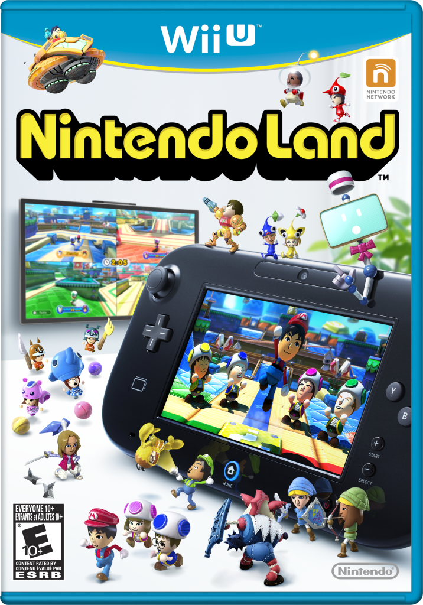

| NES |
 |
Super Mario Bros |
A classic platformer where you try to get to the end of the level to save Princess Peach from the clutches of the evil Bowser! If you want more Mario action, check out Super Mario Bros. 3. |
Platformer |
.png) |
The Legend Of Zelda |
Collect weapons and armor as you travel through an open world and dungeons to defeat Ganon! |
Adventure |
|
Tetris |
A puzzle game that has stood the test of time, and is still played by thousands to this day. Align blocks to clear lines, and try to get the highest score possible before the blocks fill up your screen! |
Puzzle |
| SNES |
 |
Super Mario Kart |
A fun racing game, but with Mario characters and items! There's a Mario Kart game on every system after the SNES, and I would recommend all of them. |
Racing |
|
Donkey Kong Country |
Try to get your banana hoard back from King K. Rool in platformer with great visuals, especially for the time. |
Platformer |
 |
Earthbound |
An RPG that set the stage for all future RPG's to come. Follow Ness and his friends on a quest to save the world. |
RPG |
| N64 |
.png) |
Super Mario 64 |
It'd be a crime to not include this one! Get back all the power stars in the first ever 3D platformer starring Nintendo's main man. |
Platformer |
|
The Legend Of Zelda: Ocarina Of Time |
An adventure that would define 3D exploration for years to come. Set off with Link (Adult and Young) in the highest rated video game of all time. |
Adventure |
|
Super Smash Bros. |
A brawl featuring your favorite Nintendo characters! By far one of Nintendo's most popular series. It got its roots on the N64, and has only gotten better since! I would recommend all entries in this series. |
Fighting |
| Gamecube |
.png) |
Pikmin |
With the help of up to 100 Pikmin, help Captain Olimar retrieve all of his ship parts in 30 days from the dangerous world of PNF-404. I would recommend all of the Pikmin games, as they're all fun RTS games that can get quite challenging if you don't know what you're doing. |
Real Time Strategy |
|
Mario Power Tennis |
Tennis, but with a Mario spin! Face off on unique and fun tennis courts as you try to get the Gold Cup! I would lso recommend Mario Golf: Toadstool Tour if you want more Mario Sports fun. (This time for golf.) |
Sports |
.png) |
Animal Crossing |
Live in a town populated with animals, as you decorate and expand your house, participate in events, and befriend all of the lovable villagers residing in your town. All of the games in this series are really good, with each one building off of the last in terms of improvements. There has been at least one game released on every console following the Gamecube, so yu shouldn't miss out. |
Life Simulation |
| Wii |
.png) |
Wii Sports |
A simple sports collection where you use your Miis as the characters! All the sports are easy to understand, and easy to just pick up and play anytime. I would also recommend it's sequel, Wii Sports Resort, and by extension, the entire Wii series. |
Sports |
.png) |
Super Mario Galaxy |
Travel throughout planets and galaxies on an attempt to save Princess Peach once again from Bowser. This and its sequel, Super Mario Galaxy 2, are both amazing 3D platformers that I would recommend to virtually anyone. |
Platformer |
|
Wario Ware: Smooth Moves |
A unique party game that will have you going trough several short paces "microgames" at increasing speeds, by swinging your Wii Remote according to the action required. The main campaign is short, but the fun comes from trying to get as high of a score as you can, as the quirky cast cheers you on. There are also a few multiplayer focused side modes to keep your guests entertained. I would recommend all the games in the Wario Ware series, as they're fun, fast paced, and can put your reaction time to the test. |
Party |
| Wii U |
.png) |
Splatoon |
A unique shooter where you switch from being a kid to a squid! The main multiplayer mode is to try to ink as much turf on the map as you can. If that doesn't seem too exciting to you, there are a bunch of other modes for you to try out! There are also two more Splatoon games on the Switch, if you'd like some more action. |
Shooter |
|  |
Nintendo Land |
A fun party collection with 12 games that'll keep you entertained for a long time. It integrates the Gamepad in an amazing way, and it actively contributes to making Nintendo Land an even better party game. |
Party |
.png) |
Captain Toad: Treasure Tracker |
Play as Captain Toad as you nagivate through cube shaped courses to try to reach the green star. The catch? Captain Toad can't jump. This leads to some very creative puzzles that you'll have to manoeuvre to reach the end. |
Puzzle/Platformer |
| Switch |
.png) |
Mario Party Superstars |
A collection of 5 boards from the N64 Mario Party's, as well as over 100 minigames from the entire series! This game is a must if you're a Mario fan, or just enjoy party games and playing with friends. |
Party |
.png) |
Kirby & The Forgotten Land |
Travels through stages in Kirby's first fully 3D adventure! Complete missions, defeat bosses and rebuild Waddle Dee Town to discover all the secrets of this strange new world. |
Platformer |
|
The Legend Of Zelda: Breath Of The Wild |
Play as Link in this absolutely breathtaking open world adventure, as you collect equipment, items and new skills along the way. Breath Of The Wild is a must for anyone who enjoys open worlds and adventure games. |
Adventure |